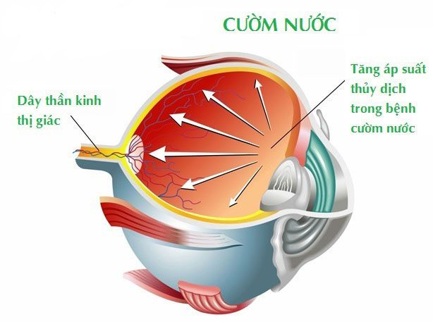
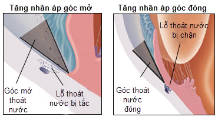

Bệnh Glaucoma (cườm nước) nguyên nhân và cách điều trị

Glaucoma thường xảy ra khi chất lỏng trong mắt không thể thoát ra ngoài, làm tăng áp lực bên trong mắt và gây áp lực lên dây thần kinh thị giác. Bệnh khá phổ biến, tuy nhiên bệnh không có triệu chứng trong giai đoạn đầu, vì thế rất khó nhận ra.
Chứng tăng nhãn áp có thể ảnh hưởng đến mọi lứa tuổi, kể cả trẻ sơ sinh và trẻ nhỏ, nhưng phổ biến nhất ở người lớn ở độ tuổi 70 và 80.
Glaucoma là gì?
Glaucoma là một nhóm các bệnh gây tổn thương không hồi phục thần kinh thị giác và có thể dẫn đến mất thị lực và mù lòa. Các dây thần kinh thị giác là một bó với hơn 1 triệu sợi thần kinh có nhiệm vụ kết nối võng mạc vào não.
Tuy nhiên, nếu được phát hiện sớm và điều trị đúng có thể ngăn chặn sự tiến triển của bệnh, bệnh nhân có thể tránh khỏi mất thị lực và thị trường nghiêm trọng.
Nguyên nhân gây Glaucoma
Bệnh Glaucoma không có nguyên nhân rõ ràng nhưng có liên quan đến sự tăng áp lực trong mắt và/hoặc giảm lưu lượng máu nuôi dưỡng dây thần kinh thị giác.
Điều này có thể do bẩm sinh hoặc do tổn thương bên trong mắt. Tăng áp suất thủy dịch có thể dẫn tới bệnh Glaucoma tuy nhiên không phải ai cũng bị Glaucoma khi mắc chứng tăng áp suất thủy dịch. Một số nguyên nhân khác có thể làm tăng nguy cơ mắc bệnh Glaucoma bao gồm:
Tuổi tác: khoảng 10 người trên 75 tuổi có 1 người bị mắc bệnh Glaucoma.
Dân tộc: những người có nguồn gốc châu Phi, Caribbean hoặc châu Á có nguy cơ cao bị bệnh Glaucoma hơn những người ở nơi khác.
Di truyền
Việc thường xuyên kiểm tra mắt định kỳ sẽ giúp phát hiện và ngăn ngừa bệnh Glaucoma
Các loại bệnh Glaucoma
Glaucoma góc mở
Đây là hình thức phổ biến nhất của bệnh Glaucoma. Người bị bệnh Glaucoma góc mở bị tắc nghẽn không hoàn toàn ở góc thoát thuỷ dịch của mắt khiến tăng áp suất mắt.
Điều này lâu ngày sẽ khiến các dây thần kinh thị giác bị tổn thương. Quá trình này diễn ra từ từ và không gây đau đớn. Điều này khiến bệnh nhân khó nhận biết được triệu chứng bệnh.

Glaucoma góc đóng
Glaucoma góc đóng hay tăng nhãn áp góc đóng hay dân gian gọi là thiên đầu thống. Bệnh xảy ra khi góc thoát thuỷ dịch của mắt bị đóng hoàn toàn.
Điều này khiến cho mắt bị gia tăng áp suất đột ngột, rất nguy hiểm cho bệnh nhân. Người bị Glaucoma góc đóng thường đau mắt, đau đầu, xuất hiện quầng sáng xung quanh khi nhìn vào bóng đèn, buồn nôn… Khi gặp phải các triệu chứng này, cần đưa người bệnh đi đến bệnh viện ngay.
Các dạng bệnh Glaucoma
– Exfoliation syndrome (hội chứng giả bong bao): giống như tăng nhãn áp góc mở nhưng các chất màu trắng trên thủy tinh thể và góc thoát thủy dịch bị tích tụ bất thường. Những chất này kết hợp với các sắc tố từ phía sau mống mắt khiến kênh thoát thuỷ dịch bị tắc nghẽn.
– Bệnh tăng nhãn áp sắc tố: bệnh thường gặp ở người mắc chứng cận thị hoặc trẻ em. Người bệnh bị tắc kênh thoát thủy dịch của mắt do các hạt sắc tố bị vỡ từ các tế bào lót mặt sau của mống mắt.
Triệu chứng bệnh Glaucoma
Trong giai đoạn đầu, bệnh tăng nhãn áp không có triệu chứng, không gây đau, tầm nhìn vẫn bình thường. Chứng tăng nhãn áp có thể phát triển ở một hoặc cả hai mắt.
Nếu không điều trị, người bị tăng nhãn áp sẽ dần dần mất đi tầm nhìn ngoại vi, giống như đang nhìn qua một đường hầm. Theo thời gian, tầm nhìn thẳng về phía trước có thể giảm xuống cho đến khi không còn tầm nhìn. Chứng tăng nhãn áp có thể được phát hiện khi:
– Kiểm tra thị lực. Thử nghiệm biểu đồ mắt giúp đo lường mức độ bạn nhìn thấy ở những khoảng cách khác nhau.
– Kiểm tra khả năng nhìn ngoại vi: kiểm tra tầm nhìn ngoại vi giúp bác sĩ xác nhận triệu chứng mất tầm nhìn ngoại vi một dấu hiệu của bệnh tăng nhãn áp.
– Kiểm tra giác mạc là phương pháp đo độ dày của giác mạc.
Điều trị Glaucoma
Điều trị sớm có thể làm chậm sự tiến triển của bệnh, đó là lý do tại sao chẩn đoán bệnh sớm rất quan trọng. Các biện pháp điều trị tăng nhãn áp bao gồm thuốc, phẫu thuật tạo hình bằng tia laser, phẫu thuật thông thường.
– Các loại thuốc, dưới dạng thuốc nhỏ mắt hoặc thuốc viên, làm giảm áp lực cho mắt bằng cách giúp chất lỏng thoát ra từ mắt. Trước khi bắt đầu sử dụng thuốc, phải được sự đồng ý của các bác sĩ chuyên khoa mắt để tránh tác dụng phụ.
Vì bệnh tăng nhãn áp thường không có triệu chứng, nên bệnh nhân thường ngưng uống hoặc quên uống thuốc. Nếu quyết định sử dụng thuốc, hãy lên một lịch trình uống thuốc cụ thể.
– Phẫu thuật bằng Laser: Bác sĩ sẽ dùng laser argon để tạo hình vùng bè (trabeculoplasty), quá trình lành vết thương sẽ co kéo lớp sợi collagen vùng bè làm tăng thoát lưu thủy dịch.
– Phẫu thuật thông thường: tạo cho một lỗ hở cho chất dịch ra khỏi mắt. Bác sĩ sử dụng các công cụ phẫu thuật để tạo ra một lỗ nhỏ dưới kết mạc (lớp xung quanh mắt). Các chất lỏng tích tụ có thể chảy qua lỗ, và sau đó hấp thụ vào máu.
Phòng ngừa Glaucoma
Không có phương pháp nào phòng ngừa bệnh tăng nhãn áp. Tuy nhiên nếu được chuẩn đoán và điều trị sớm có thể làm chậm và ngăn chặn tổn thương thần kinh thị giác. Nếu không điều trị, bệnh tăng nhãn áp có thể dẫn đến mù loà.
– Glaucoma góc mở không thể phòng ngừa, nhưng nếu được chuẩn đoán và sớm điều trị có thể ngăn ngừa suy giảm thị lực.
– Glaucoma góc đóng, có khả năng phòng ngừa. Một thủ thuật cắt mống mắt chu biên được thực hiện trong giai đoạn đầu của bệnh (khi mắt có góc đóng, nhưng vẫn chưa phát triển thành bệnh tăng nhãn áp) sẽ giúp ngăn ngừa mù lòa.
Thường xuyên đi khám mắt 1 đến 2 lần trong một năm để phát hiện những dấu hiệu bệnh Glaucoma và các bệnh về mắt khác. Luôn chọn bệnh viện mắt uy tín để khám và điều trị các bệnh về mắt. Hiện bệnh viện mắt Sài Gòn là một trong những bệnh viện uy tín, chuyên chữa trị các bệnh về mắt. Với hơn 15 năm phát triển, bệnh viện đã nhận được sự tín nhiệm của người dân trong nước và kiều bào nước ngoài.
Bệnh viện mắt Sài Gòn
Ths.BS Nguyễn Trần Quốc Hoàng